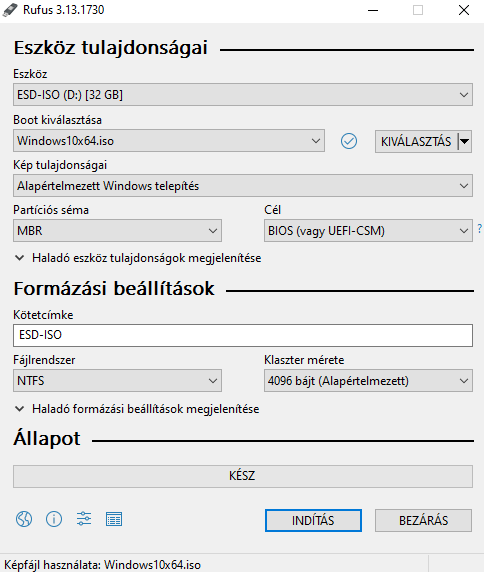
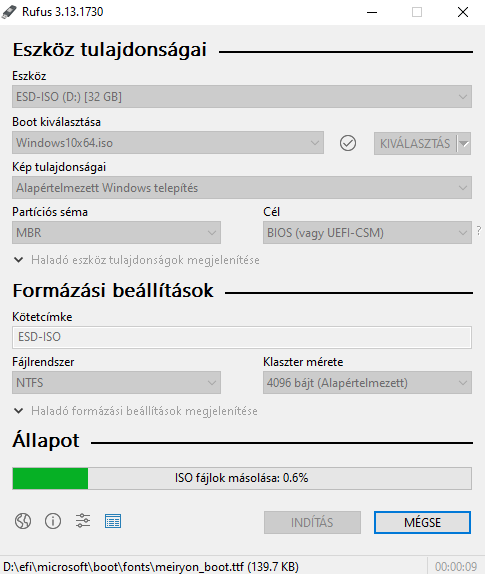
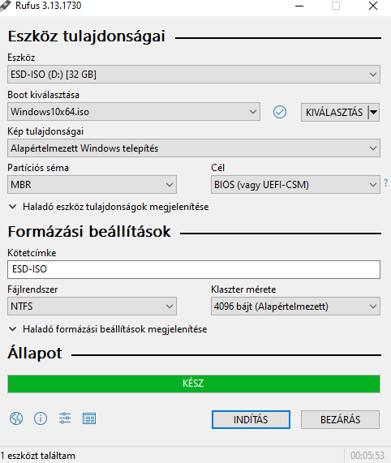

Bootolható Pendriveot nagyon egyszerű készíteni, amihez egy min. 8GB-os pendrive, illetve egy Rufus nevezetű program. Az elkészítés nagyon egyszerű. Beledugjuk a gépbe a pendriveot, majd megnyitjuk a Rufus programot ami felismeri a pendriveot, majd a kiválasztás menüpontnál válasszuk ki az iso fájl-t, majd rámegyünk a INDÍTÁS gombra ilyenkor a program megkérdezi, hogy biztosan szeretnéd-e, mivel ilyenkor az összes adat ami a pendriveon található elvész. Mjad elkezdődik a telepítés, amikor befejeződik, akkor kihúzhatjuk a számítógépből, majd átdughatjuk abba, amiben szeretnénk a linuxot telepíteni.


